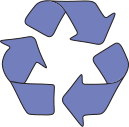
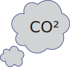

duurzaamheid
Ontdek de redenen om deel te nemen aan duurzaam kleding lenen en draag bij aan een groenere planeet. Van het verminderen van afval tot kostenbesparing, deze punten laten zien waarom jouw keuze voor kleding lenen niet alleen stijlvol is, maar ook milieubewust. Doe mee en maak een verschil!
afval
Kleding lenen draagt bij aan het verminderen van afval in de mode-industrie. Door kledingstukken te delen en meerdere levens te geven, voorkomen we dat kleding vroegtijdig in de prullenbak belandt. Hierdoor verminderen we de impact van textielafval op het milieu.
industrie
Kleding lenen vermindert de noodzaak van overmatige productie, wat resulteert in een lager verbruik van water en energie. Dit draagt bij aan het behoud van natuurlijke ecosystemen en het verminderen van de ecologische voetafdruk van de mode-industrie.
bespaar
Door te delen en te lenen, vermijden consumenten frequente aankopen van nieuwe kleding, wat gunstig is voor zowel de portemonnee als het milieu.
recycle
Kleding lenen bevordert het idee van hergebruik en recycling. Als een kledingstuk het einde van zijn levensduur bereikt, kan het worden gerecycled tot nieuwe materialen, waardoor de noodzaak van het winnen van nieuwe grondstoffen wordt verminderd.
klimaat
De mode-industrie draagt bij aan de uitstoot van broeikasgassen, zoals CO2. Door kleding te lenen en de levensduur van elk kledingstuk te verlengen, verminderen we de vraag naar nieuwe productie en verminderen we indirect de klimaatimpact. Kiezen voor duurzame praktijken in de mode draagt bij aan de strijd tegen klimaatverandering.
In conclusie, duurzaam kleding lenen heeft vele voordelen. Het minimaliseert afval, vermindert de impact op natuurlijke hulpbronnen, en beperkt de ecologische voetafdruk van de mode-industrie. Deze keuze draagt bij aan het verminderen van textielafval, behoud van grondstoffen, en een lagere uitstoot van broeikasgassen. Door bewust te lenen dragen we bij aan een groenere toekomst en een duurzamer milieu.